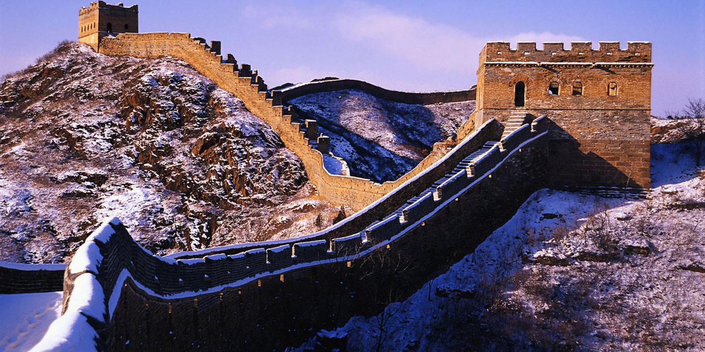
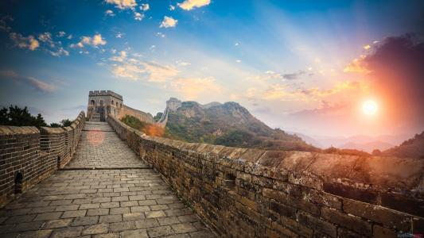
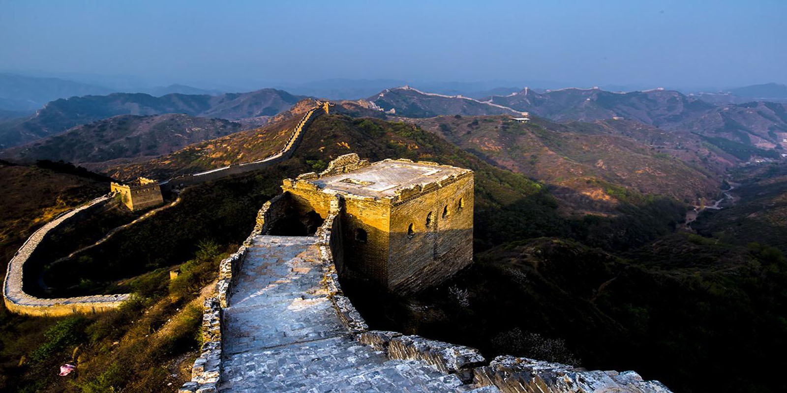

长城历史沿革
作者：cindy 日期：2017-5-16
长城是中国也是世界上修建时间最长、工程量最大的一项古代防御工程，自西周时期开始，延续不断修筑了2000多年，分布于中国北部和中部的广大土地上，总计长度达50000多千米。
自秦始皇以后，凡是统治着中原地区的朝代，几乎都要修筑长城。计有汉、晋、北魏、东魏、西魏、北齐、北周、隋、唐、宋、辽、金、元、明、清等十多个朝代，都不同规模地修筑过长城。从修筑长城的统治民族看，除汉族之外，许多少数民族统治中国的朝代也修长城，而且比汉族统治的朝代为多。清康熙时期，虽然停止了大规模的长城修筑，但后来也曾在个别地方修筑了长城，可以说自春秋战国时期开始到清代的2000多年一直没有停止过修筑。据历史文献记载，有20多个诸侯国家和封建王朝修筑过长城，若把各个时代修筑的长城加起来，有10万里以上，其中秦、汉、明3个朝代所修长城的长度都超过了1万里。
中国新疆、甘肃、宁夏、陕西、内蒙古、山西、河北、北京、天津、辽宁、吉林、黑龙江、河南、山东、湖北、湖南等省、市、自治区都有古长城、烽火台的遗迹。
建筑方法
长城的防御工程建筑长城的防御工程建筑，在两千多年的修筑过程中积累了丰富的经验。
首先是在布局上，秦始皇修筑万里长城时就总结出了“因地形，用险制塞”的重要经验，接着司马迁又写入《史记》之中，之后的每一个朝代修筑长城都是按照这一原则进行，成为军事布防上的重要依据。凡是修筑关城隘口都是选择在两山峡谷之间，或是河流转折之处，或是平川往来必经之地，这样既能控制险要，又可节约人力和材料，以达“一夫当关，万夫莫开”的效果。修筑城堡或烽火台也是选择在险要之处。至于修筑城墙，更是充分地利用地形，如像居庸关、八达岭的长城都是沿着山岭的脊背修筑，有的地段从城墙外侧看去非常险峻，内侧则甚是平缓，有“易守难攻”的效果。在辽宁境内，明代辽东镇的长城有一种叫山险墙、劈山墙，就是利用悬崖陡壁，稍微地把崖壁劈削一下就成为长城。还有一些地方完全利用危崖绝壁、江河湖泊作为天然屏障。
在建筑材料和建筑结构上以“就地取材、因材施用”的原则，创造了许多种结构方法。有夯土、块石片石、砖石混合等结构；在沙漠中还利用了红柳枝条、芦苇与砂粒层层铺筑的结构，在今甘肃玉门关、阳关和新疆境内还保存了两千多年前西汉时期这种长城的遗迹。
随着社会生产力进步，制砖技术不断发展，明代砖制品产量大增，已不再是珍贵的建筑材料，所以明长城不少地方的城墙内外檐墙都以巨砖砌筑。在当时全靠手工施工，靠人工搬运建筑材料的情况下，采用重量不大，尺寸大小一样的砖砌筑城墙，不仅施工方便，而且提高了施工率，提高了建筑水平。其次，许多关隘的大门，多用青砖砌筑成大跨度的拱门，这些青砖有的虽然已严重风化，但整个城门仍威严峙立，表现出当时砌筑拱门的高超技能。从关隘的城楼上的建筑装饰看，许多石雕砖刻的制作技术都极其复杂精细，反映了当时工匠匠心独运的艺术才华。
建筑结构
长城并不只是一道单独的城墙，而是由城墙、敌楼、关城、墩堡、营城、卫所、镇城烽火台等多种防御工事所组成的一个完整的防御工程体系。这一防御工程体系，由各级军事指挥系统层层指挥、节节控制。
墙身
墙身是城墙的主要部分，平均高度为7.8米，有些地段高达14米。凡是山岗陡峭的地方构筑的比较低，平坦的地方构筑得比较高；紧要的地方比较高，一般的地方比较低。墙身是防御敌人的主要部分，其总厚度较宽，基础宽度均有6.5米，墙上地坪宽度平均也有5.8米，保证两辆辎重马车并行。墙身由外檐墙和内檐墙构成，内填泥土碎石。
城墙构造
外檐墙是指外皮墙向城外的一面。构筑时，有明显的收分，收分一般为墙高125%。墙身的收分，能增加墙体下部的宽度，增强墙身的稳定度，加强它的防御性能，而且使外墙雄伟壮观。内檐墙是指外皮墙城内的一面，构筑时一般没有明显的收分，构筑成垂直的墙体，关于外檐墙的厚度，一般是以“垛口”处的墙体厚度为准，这里的厚度一般为一砖半宽，根据收分的比例，越往下越厚。砖的砌筑方法以扁砌为主。
长城的城墙是这一防御工程中的主体部分。它建于高山峻岭或平原险阻之处，根据地形和防御功能的需要而修建，凡在平原或要隘之处修筑得十分高大坚固，而在高山险处则较为低矮狭窄，以节约人力和费用，甚至一些最为陡峻之处无法修筑的地方便采取了“山险墙”和“劈山墙”的办法，在居庸关、八达岭和河北、山西、甘肃等地区的长城城墙，一般平均高约7、8米，底部厚约6、7米，墙顶宽约4、5米。在城墙顶上，内侧设宇墙，高1米余，以防巡逻士兵跌落，外侧一面设垛口墙，高2米左右，垛口墙的上部设有望口，下部有射洞和擂石孔，以观看敌情和射击、滚放擂石之用。有的重要城墙顶上，还建有层层障墙，以抵抗万一登上城墙的敌人。到了明代中期，抗倭名将戚继光调任蓟镇总兵时，对长城的防御工事作了重大的改进，在城墙顶上设置了敌楼或敌台，以住宿巡逻士兵和储存武器粮袜，使长城的防御功能极大的加强。
墙的结构内容是根据当地的气候条件而定的，总观万里长城的构筑方法，有如下几种类型： 1．版筑夯土墙；2．土坯垒砌墙；3．青砖砌墙；4．石砌墙；5．砖石混合砌筑；6．条石；7．泥土连接砖。
用砖砌、石砌、砖石混合砌的方法砌筑城墙，在地势坡度较小时，砌筑的砖块或条石与地势平行，而当地势坡度较大时，则用水平跌落的方法来砌筑。